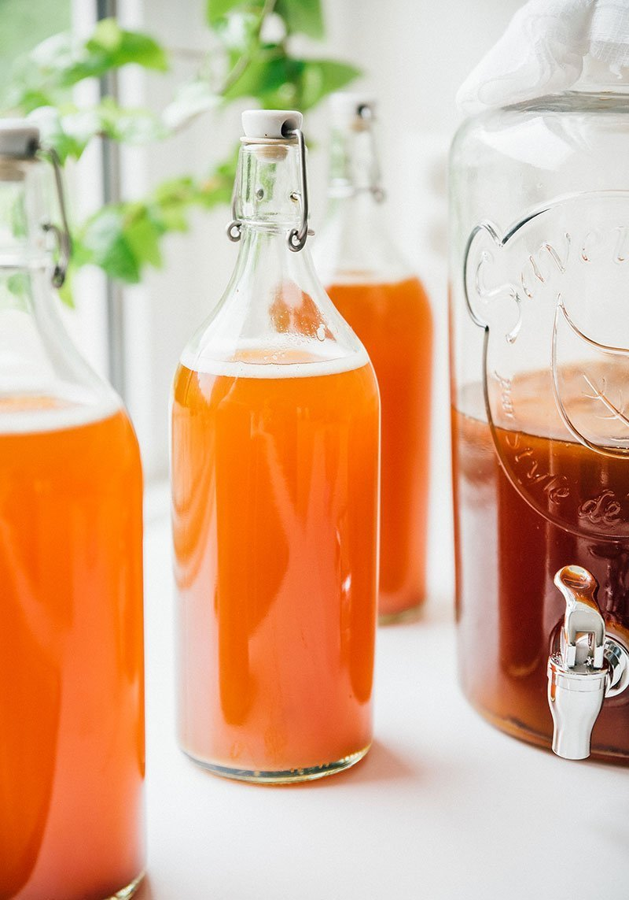
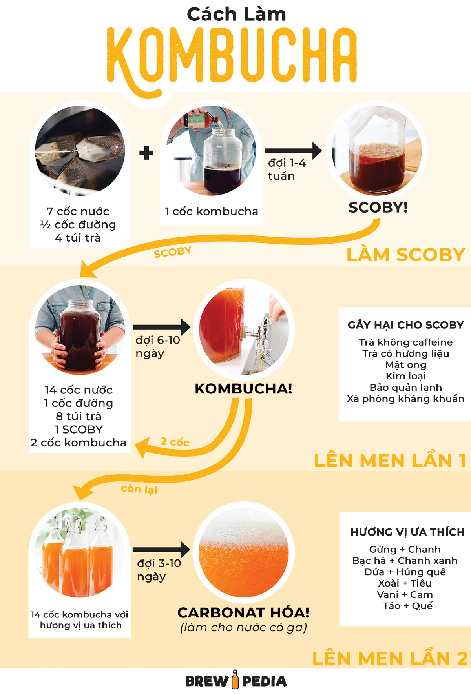
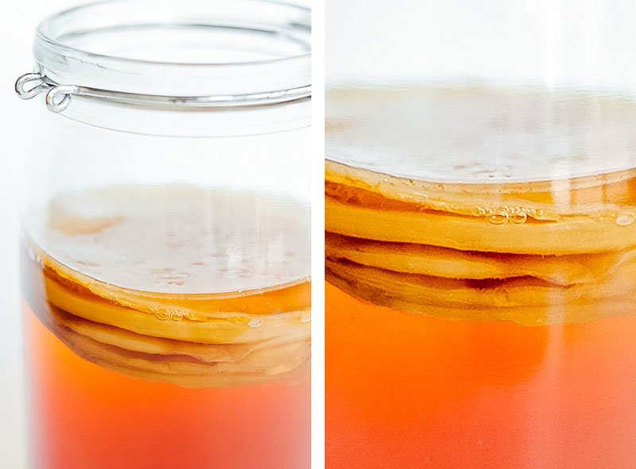
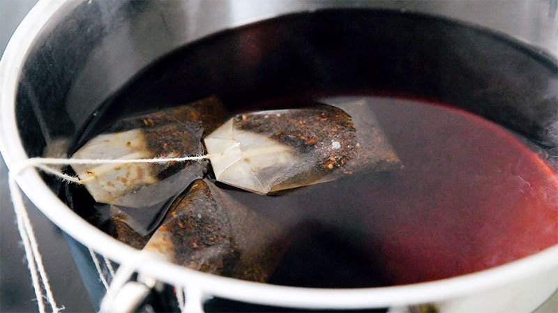
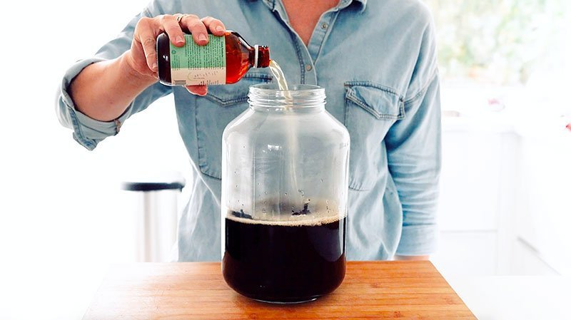
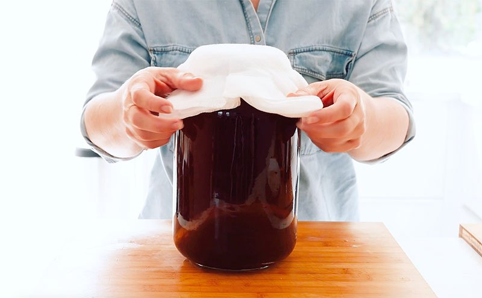
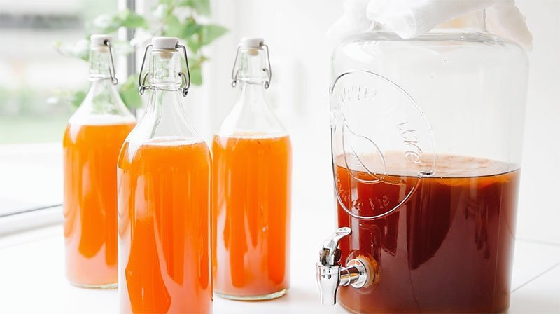
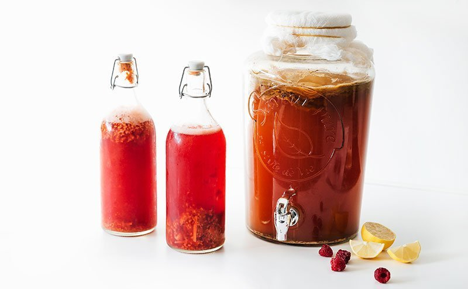

Cách làm Kombucha
Bạn đã bao giờ tự hỏi cách làm kombucha – loại trà lên men sủi bọt thơm ngon – như thế nào chưa? Chúng tôi sẽ hướng dẫn bạn các bước cơ bản để làm kombucha từ đầu đến cuối! Không cần thiết bị hay nguyên liệu phức tạp.

Các bước chính để làm kombucha tại nhà:
- Làm SCOBY (từ 1 đến 4 tuần) - tạo "men nấm"
- Lên men lần đầu (từ 6 đến 10 ngày) - làm trà kombucha
- Lên men lần hai (từ 3 đến 10 ngày) - tạo ga cho trà kombucha

Cách tạo SCOBY:
SCOBY (Symbiotic Culture Of Bacteria and Yeast) là màng sinh học hình thành trên bề mặt của quá trình lên men. Nó là "mẹ nấm" khởi động mỗi mẻ kombucha và bảo vệ kombucha khỏi các chất gây ô nhiễm như bụi và mảnh vụn. Bạn có thể mua SCOBY sẵn có, nhưng cũng dễ dàng tự làm tại nhà.

Nguyên liệu để làm SCOBY
- 7 cốc (1.6 L) nước (có thể dùng nước máy)
- ½ cốc (100 g) đường trắng
- 4 túi trà đen
- 1 cốc (240 mL) kombucha mua ở cửa hàng, không tiệt trùng, không hương liệu
Dụng cụ cần thiết:
- Một bình lớn bằng thủy tinh hoặc gốm (dung tích ít nhất 3,7 lít)
- Vải dệt chặt (bộ lọc cà phê, khăn giấy, khăn ăn, vải thưa)
- Dây chun
- Nồi lớn để đun nước
Cách làm:
Bước 1: Pha trà ngọt:
Đun sôi nước. Sau khi nước sôi, tắt bếp và hòa tan đường vào nước. Thêm túi trà và để ngâm ít nhất 20 phút (hoặc đến khi trà nguội).

Bước 2: Để nguội đến nhiệt độ phòng:
Để trà nóng nguội đến nhiệt độ phòng. Bạn có thể tăng tốc quá trình này bằng cách đun sôi chỉ 2 cốc nước, hòa tan đường và ngâm trà trong 20 phút. Sau đó thêm 5 cốc nước lạnh còn lại, giúp hỗn hợp nhanh chóng đạt nhiệt độ phòng.
Bước 3: Thêm kombucha:
Đổ trà ngọt vào bình, sau đó thêm kombucha mua ở cửa hàng, đảm bảo bao gồm cả cặn ở đáy chai, vì chúng giúp khởi động quá trình lên men.

Bước 4: Che lại và lên men
Che bình bằng vài lớp vải dệt chặt để ngăn côn trùng và mảnh vụn, cố định bằng dây chun. Đặt bình ở nơi tối, yên tĩnh và ở nhiệt độ phòng (21-24°C) trong 1 đến 4 tuần, đến khi hình thành SCOBY dày khoảng 0,5 cm.
Chuyển sang lên men lần đầu: Sau khi có SCOBY, bạn có thể sử dụng nó để bắt đầu quá trình lên men lần đầu.
LƯU Ý KHI LÀM SCOBY:
- Không dùng trà khử caffein: SCOBY không phát triển tốt với trà khử caffein.
- Chỉ dùng trà đen: SCOBY không phát triển tốt với trà xanh hoặc trà có hương vị. Sau khi SCOBY lớn hơn, bạn có thể sử dụng trà xanh, nhưng ban đầu nên dùng trà đen.
- Không dùng mật ong: Mật ong có thể chứa vi khuẩn botulism, có thể nguy hiểm trong quá trình lên men. Bạn có thể sử dụng mật ong trong lần lên men thứ hai, khi số lượng vi khuẩn có lợi đã đủ để chống lại vi khuẩn có hại, nhưng ban đầu nên dùng đường.
Lên men lần đầu
Sau khi có SCOBY, bạn đã sẵn sàng bắt đầu quá trình lên men lần đầu để tạo ra kombucha mà bạn sẽ uống.
Nguyên liệu cho lần len men đầu tiên:
- 7 cốc (1.6 L) nước
- ½ cốc (100 g) đường trắng
- 4 túi trà đen hoặc trà xanh
- 1 cốc (240 mL) kombucha (từ mẻ trước hoặc mua tại cửa hàng)
- SCOBY
Dụng cụ cần thiết:
- Bình lớn bằng thủy tinh hoặc gốm (dung tích ít nhất 3,7 lít)
- Vải dệt chặt và dây chun
- Nồi lớn để đun nước
Các bước thực hiện:
Bước 1: Pha trà ngọt
Đun sôi nước. Sau khi nước sôi, tắt bếp và hòa tan đường vào nước. Thêm túi trà và để ngâm ít nhất 20 phút hoặc đến khi trà nguội.
Bước 2: Để nguội đến nhiệt độ phòng:
Để trà nguội đến nhiệt độ phòng như đã mô tả ở bước tạo SCOBY.
Bước 3: Thêm kombucha khởi đầu và SCOBY:
Đổ trà ngọt vào bình, thêm kombucha khởi đầu và nhẹ nhàng đặt SCOBY vào bình.
Bước 4: Che phủ:
Che bình bằng vải dệt chặt và cố định bằng dây chun.

Bước 5: Lên men:
Đặt bình ở nơi tối, yên tĩnh và ở nhiệt độ phòng (21-24°C) trong 6 đến 10 ngày. Khi hoàn thành, kombucha nên có vị hơi ngọt và hơi chua.
Bước 6: Chuyển sang lên men lần hai:
Dành 2 cốc từ mẻ này để làm kombucha khởi đầu cho mẻ tiếp theo (để lại trong bình cùng SCOBY). Phần còn lại có thể chuyển sang lần lên men thứ hai để tạo ga cho kombucha.
LƯU Ý KHI LÊN MEN LẦN ĐẦU:
- Thời gian lên men: Thời gian lên men có thể thay đổi tùy thuộc vào nhiệt độ và sở thích cá nhân. Kombucha sẽ có vị ngọt hơn nếu lên men ngắn ngày và chua hơn nếu lên men lâu hơn.
- Bảo quản SCOBY: SCOBY có thể được sử dụng nhiều lần. Giữ nó trong một ít kombucha để duy trì hoạt động.
Lên men lần hai
Đây là bước cuối cùng và thú vị nhất trong quá trình làm kombucha tại nhà! Lần lên men thứ hai là khi kombucha được tạo hương vị và tạo ga, biến nó thành một thức uống sủi bọt thơm ngon.

Nguyên liệu cho lần lên men thứ hai:
- Kombucha tự làm từ lần lên men đầu
- Chất tạo ngọt (trái cây, mật ong hoặc đường). Tỷ lệ chung là 1 muỗng cà phê đường cho mỗi cốc kombucha
- Chai thủy tinh có nắp kín (chai bia hoặc chai kombucha cũ)
Các bước thực hiện:
Bước 1: Lọc kombucha:
Loại bỏ SCOBY và 2 cốc kombucha để làm mẻ tiếp theo.
Bước 2: Thêm hương vị:
Thêm trái cây, nước ép hoặc đường vào chai.
Bước 3: Rót kombucha:
Để chai ở nhiệt độ phòng từ 3-10 ngày.
Bước 4: Lên men:
Để chai ở nhiệt độ phòng từ 3-10 ngày.
Bước 5: Làm lạnh và thưởng thức:
Sau khi đủ ga, cho vào tủ lạnh để chậm quá trình lên men.

LƯU Ý KHI LÊN MEN LẦN HAI:
- Thử độ ga sau 3 ngày bằng cách mở một chai. Nếu chưa đủ, để thêm vài ngày.
- Không đóng chai quá đầy để tránh nổ do áp suất khí gas.
- Mở chai cẩn thận, đặc biệt khi thêm nhiều đường hoặc trái cây.
Giờ bạn đã biết cách làm kombucha tại nhà! Chúc bạn có những mẻ kombucha thơm ngon và bổ dưỡng!